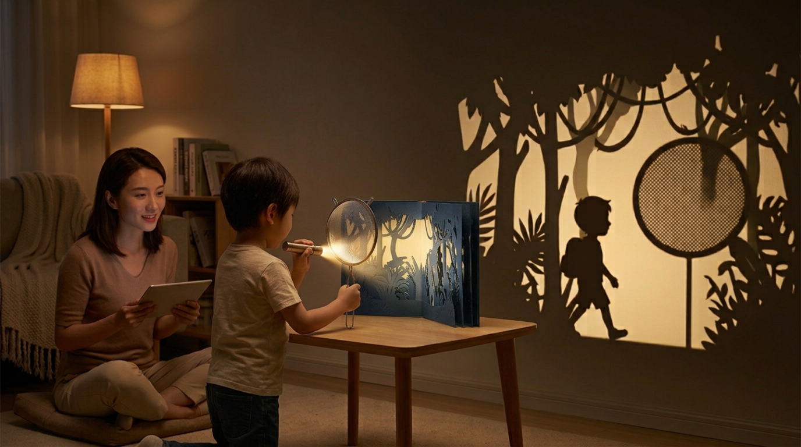
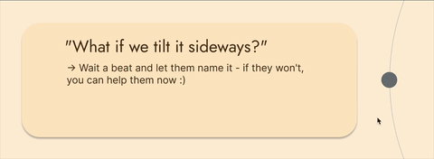
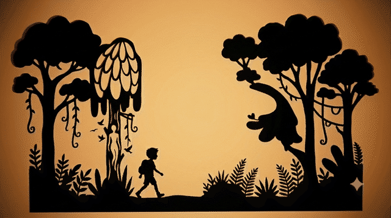

The book only has half the picture. The room fills in the rest.

Foundtale is a picture book with pieces missing. A parent reads the story aloud from a companion screen, one line at a time — each line comes with a small prompt, not an answer, just a nudge. The child takes that nudge into the room and finds an object that could stand in for the missing piece: a sieve for a tree or spiderweb, a fork for a bird's wingspan. They hold it up to a flashlight behind the page, and its shadow falls into the cut-out scene, completing it. Because the object is real and never the same twice, the story looks a little different every time it's read.

I went in assuming the problem was time. The survey complicated that assumption. Parents weren't necessarily short on time together — they were looking for better ways to use it.
Technology during together-time
Satisfaction with shared time
What gets in the way
What would help
None of that says parents need more time. It says the cost isn't the minutes — it's what has to happen inside them, and that reframed the whole brief.
Not how do we free up an evening — but how do we hand a parent both the idea and a way into the conversation, for the moments they don't have the energy or the instinct to build either from scratch.
Children don't need to be taught that a sleeve can become a tree. Pretend play is already there. What's missing is a prompt to start the exchange — and a parent ready to receive whatever names back.
The technology supports the parent; the parent supports the child; the world around them supplies the material.
In the current story, a boy named Theo is on an expedition through a forest where nothing looks like the trees he knows.

"Theo found the first tree. Its shadow looked nothing like a tree at all."
Child task: Find the tree that's different from all the rest.
The catch — every tree looks different to him, so the task can't be solved by comparing. The only way forward is to make a tree of his own.
Whatever the child finds and holds behind the page, lit by the torch, becomes the answer. There is no correct tree. It becomes Theo's tree because the child chose it.
This was the harder design decision than anything I built. The parent controls pacing — no timer nudging the family forward. No animation rewarding completion. No app voice taking over the narration. No screen the child looks at directly. The software's entire job: hand the parent a line, offer a prompt, get out of the way.
01
No correct answers
The moment the product decides whether something is a "good" tree, the child stops imagining and starts trying to get it right. I want the child asking what else could this be, not if I got it right.
02
No AI-generated storytelling
The app could easily create a new story every time. I chose not to. My job is to help the parent start a conversation, not replace another person. Here, a child's strange answer is more valuable than a perfect one generated by AI.
03
No solo mode
The parent isn't an extra feature that can be removed later. The experience is built around doing it together. Without the parent, it wouldn't be a simpler version of Foundtale — it would be a different product solving a different problem.
None of these boundaries ask for more of a parent's day. Developmental psychology suggests a child doesn't need hours of undivided attention to feel emotionally secure — something closer to twenty focused minutes is enough. The goal was never to compete for more time. Just to make sure the minutes that already exist actually land.
01
What I did:
I tested this with three to four parent-child pairs. Some sessions I watched directly; others were shared with me as private videos or described afterward in voice messages. Rather than build a full book, I adapted one page from an existing folktale into the cut-out-and-torch format — no app, just paper and a flashlight.
Here's what showed up:
I was hoping to see: prompt → conversation → search → discovery → interpretation → story
Instead, I often saw: line read → question → answer → next page
02
What I would want to learn next:
Does this create a better parent-child interaction,
or just a clever activity?